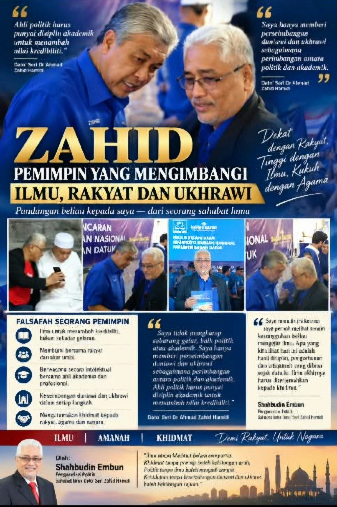

ZAHID: PEMIMPIN YANG MENGIMBANGI ILMU, RAKYAT DAN UKHRAWI
Penganalisis Politik — Sahabat lama Dato’ Seri Dr Ahmad Zahid Hamidi
Ada kalanya, satu jawapan ringkas daripada seorang sahabat lama mampu membuka ruang yang lebih luas untuk kita mengenali sisi sebenar seseorang pemimpin.
Itulah yang saya rasakan apabila menerima jawapan daripada YAB Dato’ Seri Dr Ahmad Zahid Hamidi selepas beliau membaca tulisan saya bertajuk “Saya Pernah Melihat Sendiri Kesungguhan Zahid Mengejar Ilmu.”
Terus terang saya katakan, saya tidak menjangka beliau akan memberikan respons yang begitu peribadi, tenang dan sarat dengan falsafah kehidupan.
Antara kata-kata beliau yang paling menarik perhatian saya ialah:
“Saya hanya memberi perseimbangan duniawi dan ukhrawi sebagaimana perimbangan antara politik dan akademik.”
Bagi saya, ayat ini bukan sekadar jawapan seorang pemimpin kepada seorang sahabat.
Ia menggambarkan cara beliau melihat kehidupan dan kepimpinan.
POLITIK BUKAN SEKADAR KUASA
Dato’ Seri Zahid turut menyatakan sesuatu yang pada saya amat penting:
“Bagi saya ahli politik harus punyai disiplin akademik untuk menambah nilai kredibiliti.”
Kemudian beliau menyambung bahawa seorang ahli politik perlu mampu:
“membumi bersama rakyat dan akar umbi dan berwacana secara intelektual bersama ahli akademia dan golongan profesional.”
Saya membaca ayat ini beberapa kali.
Kerana di situlah saya melihat satu prinsip kepimpinan yang sering kita bincangkan tetapi tidak semua orang mampu melaksanakannya.
Seorang pemimpin tidak boleh terlalu tinggi sehingga terputus daripada rakyat.
Tetapi pada masa yang sama, seorang pemimpin juga tidak boleh terlalu selesa dengan politik akar umbi sehingga kehilangan kemampuan untuk berfikir secara intelektual, strategik dan jauh ke hadapan.
Pemimpin perlu tahu bila harus turun ke bawah bersama rakyat dan bila harus naik ke meja perbincangan bersama golongan ilmuwan, profesional dan pemikir.
Itulah keseimbangan.
ILMU BUKAN UNTUK GELARAN
Dalam jawapan beliau, Dato’ Seri Zahid juga menyebut bahawa beliau tidak mengharapkan sebarang gelaran, sama ada politik mahupun akademik.
Bagi saya, kenyataan ini menarik kerana saya sendiri pernah melihat satu sisi perjalanan akademik beliau.
Saya masih teringat sekitar tahun 2000 ketika saya berkunjung ke kediaman beliau di Country Heights.
Pada ketika itu, saya melihat sendiri beliau duduk di hadapan komputer menyiapkan tugasan akademiknya.
Saya melihat seorang ahli politik yang sibuk dengan urusan politik, tetapi pada masa yang sama masih memberikan ruang kepada ilmu.
Hari ini, apabila beliau bercakap tentang disiplin akademik, saya teringat kembali kepada pengalaman itu.
Saya sedar bahawa apa yang saya lihat ketika itu bukan sekadar seorang pemimpin yang sedang menyiapkan tugasan.
Saya sebenarnya sedang melihat satu bentuk disiplin diri.
Ilmu tidak datang dengan mudah.
Ia memerlukan masa, kesabaran, pengorbanan dan istiqamah.
Dan bagi saya, itulah yang menjadikan perjalanan akademik seseorang lebih bermakna daripada sekadar sehelai sijil atau gelaran di hadapan nama.
MAMPU MEMBUMI, MAMPU BERWACANA
Dalam politik, seseorang pemimpin perlu memahami denyut nadi rakyat.
Dia perlu tahu apa yang dirasai oleh orang biasa.
Apa yang berlaku di kampung.
Apa yang dibincangkan di kedai kopi.
Apa yang dirasai oleh keluarga yang sedang membesarkan anak.
Apa yang difikirkan oleh generasi muda.
Itulah politik yang membumi.
Tetapi dunia hari ini juga menuntut sesuatu yang lain.
Pemimpin perlu memahami ekonomi, teknologi, pendidikan, geopolitik, perubahan dunia, pemikiran strategik dan perkembangan masyarakat.
Di situlah pentingnya kemampuan untuk berwacana bersama ahli akademia dan golongan profesional.
Dan saya melihat inilah falsafah yang cuba disampaikan oleh Dato’ Seri Zahid melalui jawapannya kepada saya.
Dekat dengan rakyat, tetapi tidak jauh daripada ilmu.
Berakar di bumi, tetapi mampu melihat ke ufuk yang lebih luas.
ANTARA DUNIA DAN AKHIRAT
Lebih menarik lagi ialah penggunaan istilah duniawi dan ukhrawi oleh beliau.
Bagi saya, ini memperlihatkan satu sisi yang jarang kita bincangkan apabila bercakap tentang pemimpin politik.
Kepimpinan bukan hanya tentang jawatan.
Bukan hanya tentang pilihan raya.
Bukan hanya tentang kuasa.
Ada persoalan yang lebih besar — amanah.
Ada pertanggungjawaban kepada manusia.
Dan ada pertanggungjawaban kepada Allah SWT.
Sebab itu saya melihat ungkapan beliau tentang keseimbangan duniawi dan ukhrawi sebagai sesuatu yang mempunyai makna yang mendalam.
Seorang pemimpin boleh bekerja keras untuk negara, tetapi pada masa yang sama tidak boleh melupakan bahawa kehidupan dunia mempunyai penghujungnya.
Jawatan akan berakhir.
Kuasa akan berubah.
Nama akan dilupakan oleh generasi tertentu.
Tetapi amal, ilmu, jasa dan nilai yang ditinggalkan boleh terus hidup.
KEPIMPINAN YANG BERPRINSIP
Saya telah mengenali Dato’ Seri Zahid untuk tempoh yang panjang.
Saya telah melihat perjalanan politik beliau melalui pelbagai musim.
Ada ketika beliau berada di atas.
Ada ketika beliau melalui tekanan.
Ada ketika beliau berdepan pelbagai cabaran.
Tetapi satu perkara yang saya lihat ialah disiplin untuk terus bergerak.
Bagi saya, seseorang pemimpin yang mempunyai prinsip tidak semestinya hidup tanpa cabaran.
Sebaliknya, prinsiplah yang menjadi kompas apabila datang cabaran.
Dan disiplin pula menjadi kekuatan untuk terus melangkah apabila perjalanan menjadi sukar.
Sebab itu saya melihat kepimpinan bukan semata-mata pada berapa tinggi seseorang berada.
Saya melihatnya pada bagaimana dia membawa dirinya ketika berada di bawah tekanan.
DARIPADA ILMU KEPADA KHIDMAT
Pada akhirnya, ilmu harus membawa manusia kepada khidmat.
Jika ilmu hanya menjadi gelaran, ia kehilangan sebahagian daripada maknanya.
Jika politik hanya menjadi perebutan kuasa, ia juga kehilangan nilai kemanusiaannya.
Tetapi apabila ilmu digunakan untuk memahami rakyat, politik digunakan untuk berkhidmat, dan agama menjadi panduan moral, di situlah lahirnya satu bentuk kepimpinan yang lebih seimbang.
Itulah yang saya fahami daripada kata-kata Dato’ Seri Zahid kepada saya.
Duniawi dan ukhrawi.
Politik dan akademik.
Rakyat dan intelektual.
Ilmu dan khidmat.
Empat pasangan ini sebenarnya membawa satu mesej yang sama:
KESEIMBANGAN.
Dan keseimbangan itulah yang amat penting dalam kehidupan seorang pemimpin.
SEBUAH PENGHARGAAN DARIPADA SEORANG SAHABAT LAMA
Saya menulis ini bukan untuk mengangkat seseorang ke tempat yang tidak sepatutnya.
Saya menulis kerana saya pernah melihat sendiri sebahagian daripada perjalanan itu.
Saya pernah melihat seorang ahli politik yang begitu sibuk masih duduk menyiapkan tugasan akademik.
Saya pernah melihat perjalanan politiknya.
Saya pernah mengikuti perubahan zaman dan cabaran yang dilaluinya.
Dan hari ini, apabila beliau sendiri menjelaskan falsafahnya tentang keseimbangan antara duniawi dan ukhrawi, serta antara politik dan akademik, saya semakin memahami bahawa kepimpinan yang panjang bukan dibina hanya dengan populariti.
Ia memerlukan prinsip.
Ia memerlukan disiplin.
Ia memerlukan ilmu.
Ia memerlukan kesabaran.
Dan yang paling penting, ia memerlukan kesedaran bahawa kuasa adalah amanah, bukan sekadar keistimewaan.
Sebagai seorang sahabat lama, saya hanya ingin merakamkan satu perkara:
Saya pernah melihat kesungguhan itu ketika ia masih belum menjadi cerita besar untuk diketahui orang.
Hari ini, apabila saya melihat beliau terus menggalas tanggungjawab besar, saya teringat kembali kepada seorang lelaki yang pernah saya lihat duduk di hadapan komputer, menyiapkan tugasan akademiknya bertahun-tahun dahulu.
Mungkin itulah hakikat sebuah perjalanan.
Kita tidak menjadi seseorang dalam satu malam.
Kita dibentuk oleh disiplin yang kita lakukan ketika tiada siapa melihat.
Dan kadang-kadang, bertahun-tahun kemudian, barulah dunia melihat hasilnya.
Semoga Allah SWT terus memberikan kekuatan, kesihatan, kebijaksanaan dan petunjuk kepada YAB Dato’ Seri Dr Ahmad Zahid Hamidi dalam melaksanakan amanahnya.
Kerana pada akhirnya:
Ilmu tanpa khidmat belum sempurna.
Khidmat tanpa prinsip boleh kehilangan arah.
Politik tanpa ilmu boleh menjadi sempit.
Dan kehidupan tanpa keseimbangan duniawi dan ukhrawi boleh kehilangan tujuan.
Semoga kita semua mengambil pengajaran.
Daripada ilmu kepada khidmat.
Daripada prinsip kepada tindakan.
Daripada dunia kepada akhirat.
Penganalisis Politik — Sahabat lama Dato’ Seri Dr Ahmad Zahid Hamidi